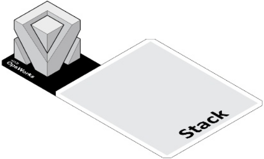
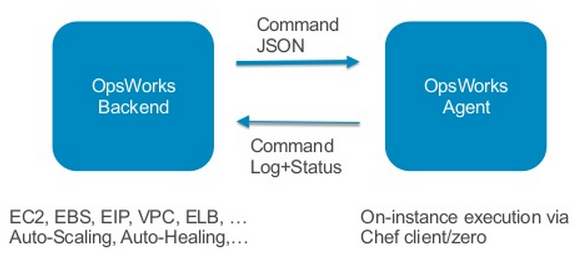
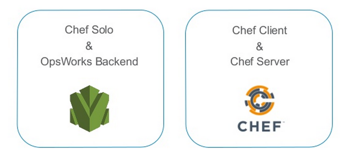

00:00:00
Goldcar AWS Opsworks
Creantbits, Octubre 2014
Pressing 2 will display these fascinating notes
Notes
Creantbits · Oct 2014 · apsl.net

Agenda
- ¿Qué es OpsWorks?
- ¿Por qué OpsWorks?
- Conceptos OpsWorks
- Arquitectura OpsWorks
- Customización: Recetas Chef
- Demo
- Experiencia Goldcar
Notes
Creantbits · Oct 2014 · apsl.net

Notes
Creantbits · Oct 2014 · apsl.net
AWS OpsWorks
- DevOps Application Management Service
Notes
Creantbits · Oct 2014 · apsl.net
AWS OpsWorks
- DevOps Application Management Service
- Agrupación y orquestación de servicios AWS
- Orientado al ciclo de vida de la Aplicación
- Inicialmente, un experimento separado dentro de AWS
Notes
Creantbits · Oct 2014 · apsl.net
¿Porqué OpsWorks? - Simplicidad vs Control

- Heroku y OpenShift estarían cerca de OpsWorks
Notes
Creantbits · Oct 2014 · apsl.net
Características OpsWorks
- Altamente customizable. Al final, todo acaba en una ejecución Chef.
- Arquitectura repetible. Orientada a fallos.
- Sólo pagas por recursos AWS usados.
- Arquitectura auto documentada: Modelado Layers, recetas mantenidas en Git.
- Distintos entornos idénticos y repetibles: prod, pre, test
- Mejor con arquitecturas "shared noting" (12factor.net)
Notes
Creantbits · Oct 2014 · apsl.net
¿Qué provee OpsWorks?
- Provisionamiento instancias. Integración AWS
- deploy + rollback. Automatización del ciclo de vida de una aplicación
- Gestión de la configuración
- Balanceo carga
- Escalado automático. Auto Healing
- Logs + Monitorización
- Consola web, aws-cli, API (python boto)
- Permisos
Notes
Creantbits · Oct 2014 · apsl.net
Conceptos OpsWorks fundamentales
- Stack
- Layers
- Aplicaciones
- Instancias
- Lifecycle Events
Nomenclatura propia OpsWorks.
Notes
Creantbits · Oct 2014 · apsl.net

Notes
Creantbits · Oct 2014 · apsl.net
Stack

Es el contenedor de más alto nivel, y abarca una o más aplicaciones y todos sus recursos necesarios. Para una aplicación completa, crearemos un stack, pero podremos usar varios stacks para entornos de producción, test o pre-produción.
Notes
Creantbits · Oct 2014 · apsl.net
Layer

- Cada stack tiene uno o más layers.
- Podemos definir cada layer como distintos roles de servicio.
- Por ejemplo, podríamos tener un layer de balanceo de carga, uno de memcached, y otro de servidor de aplicaciones.
- Podremos usar los layers que vienen de serie, o Custom Layers
Notes
Creantbits · Oct 2014 · apsl.net
Built-in Layers
- Haproxy
- Rails App Server
- PHP
- Node.js
- Java
- Mysql
- Memcached
- Ganglia
Notes
Creantbits · Oct 2014 · apsl.net
Aplicación

- Es el código de la aplicación.
- La fuente puede ser S3, git o un zip. En nuestro caso, usamos repositorios git.
- La aplicación se despliega en un layer.
- Un layer puede contener distintas aplicaciones que se escalarán y configurarán conjuntamente.
Notes
Creantbits · Oct 2014 · apsl.net
Instancias

- Las instancias se asignan a uno o más layers.
- Por ejemplo, podemos asignar instancias al layer de haproxy.
- Podemos iniciar instancias manualmente, por tiempo, o por carga bajo demanda (memoria, carga o uso de cpu).
Notes
Creantbits · Oct 2014 · apsl.net

Notes
Creantbits · Oct 2014 · apsl.net

Notes
Creantbits · Oct 2014 · apsl.net

Notes
Creantbits · Oct 2014 · apsl.net
Arquitectura OpsWorks

- OpsWorks backend genera eventos: deploy app, escalado.
- Opsworks agent escucha eventos del ciclo de vida
- El agente lanza Chef Solo, sobre datos json
Notes
Creantbits · Oct 2014 · apsl.net

- Versiones soportadas: 11.4 o 11.10
- Lanzado por los eventos del ciclo de vida
- Cada evento viene con un estado JSON
- https://github.com/opscode-cookbooks
- https://community.opscode.com/
- https://docs.getchef.com/
Notes
Creantbits · Oct 2014 · apsl.net
Eventos del ciclo de vida

Las recetas se definen en cada layer, y se ejecutan por eventos generados por el ciclo de vida de la aplicación.
Notes
Creantbits · Oct 2014 · apsl.net
Eventos del ciclo de vida

Notes
Creantbits · Oct 2014 · apsl.net

Notes
Creantbits · Oct 2014 · apsl.net

Notes
Creantbits · Oct 2014 · apsl.net

Notes
Creantbits · Oct 2014 · apsl.net
Opciones Customización
- Sobreescribir atributos en "Custom Json"
- Sobreescribir atributos chef vía receta custom
- Sobreescribir Plantilla Chef
- Deploy hooks
- Proveer receta customizada en Layer por defecto
- Proveer receta customizada en Layer Custom.
(Ordenados de más simples a más control)
Notes
Creantbits · Oct 2014 · apsl.net
Atributos y Custom Json

Notes
Creantbits · Oct 2014 · apsl.net

Notes
Creantbits · Oct 2014 · apsl.net
Deploy hooks:
$ cd mi_app_code
$ ls deploy/
before_migrate.rb
before_symlink.rb
before_restart.rb
after_restart.rb
$ cat deploy/after_restart.rb
Chef::Log.info("GC: Ejecutando before_symlink hook..")
node[:deploy].each do |application, deploy|
app_root = "#{deploy[:deploy_to]}/current"
execute "chmod -R g+rw #{app_root}/cache" do
end
end
Notes
Creantbits · Oct 2014 · apsl.net
Estructura receta Chef
Cookbook: "wordpress::configure"
$ find wordpress/
recipes/configure.rb
attributes/default.rb
templates/default/wp-config.php.erb
Notes
Creantbits · Oct 2014 · apsl.net
Estructura receta Chef
$ cat attributes/default.rb
default['wordpress']['wp_config']['enable_W3TC'] = false
default['wordpress']['wp_config']['force_secure_logins'] = false
Custom json:
{
"wordpress": {
"wp_config": {
"enable_W3TC": true,
"force_secure_logins": false
}
}
}
Notes
Creantbits · Oct 2014 · apsl.net
Estructura receta Chef
recipes/configure.rb
node[:deploy].each do |app_name, deploy|
Chef::Log.info("Configuring WP app #{app_name}...")
if defined?(deploy[:application_type])
&& deploy[:application_type] != 'php'
Chef::Log.debug("Skipping WP application #{app_name}")
next
end
template "#{deploy[:deploy_to]}/current/wp-config.php" do
source "wp-config.php.erb"
mode 0660
group deploy[:group]
owner "www-data"
end
end
Notes
Creantbits · Oct 2014 · apsl.net
Estructura receta Chef
templates/default/wp-config.php.erb
/** MySQL database password */
define('DB_PASSWORD', '<%= @password %>');
/** MySQL hostname */
define('DB_HOST', '<%= @host %>');
<% if node['wordpress']['wp_config']['enable_W3TC']==true -%>
/** Enable W3 Total Cache */
define('WP_CACHE', true); // Added by W3 Total Cache
define('W3TC_EDGE_MODE', true);
define('COOKIE_DOMAIN', '');
<% end -%>
Notes
Creantbits · Oct 2014 · apsl.net
Imprescindible para desarrollo recetas:
[root@gaia ~]# opsworks-agent-cli get_json
{
"ssh_users": {
},
"opsworks": {
"agent_version": "328",
"activity": "configure",
"valid_client_activities": [
"reboot",
"stop",
"deploy",
"setup",
"configure",
"update_dependencies",
"install_dependencies",
"update_custom_cookbooks",
"execute_recipes"
],
...
Notes
Creantbits · Oct 2014 · apsl.net
Experiencia Goldcar
- Curva aprendizaje alta. Chef a bajo nivel.
- Cambios importantes OpsWorks: RDS, Cheff 11.10, Berkshelf.
- Ciclo de desarrollo de recetas lento: desarrollar, actualizar cookbooks, probar. Nueva receta: 1h.
- Deploy hooks son útiles.
- Modificamos receta deploy para no reiniciar apache en despliegue.
- Desarrollamos CLI propio: gcops.
- Recetas para newrelic, monit, cron, configuraciones
- Recetas haproxy y apache2 muy retocadas
Notes
Creantbits · Oct 2014 · apsl.net
¿Preguntas?
Notes
Creantbits · Oct 2014 · apsl.net
Gracias
Notes
Creantbits · Oct 2014 · apsl.net